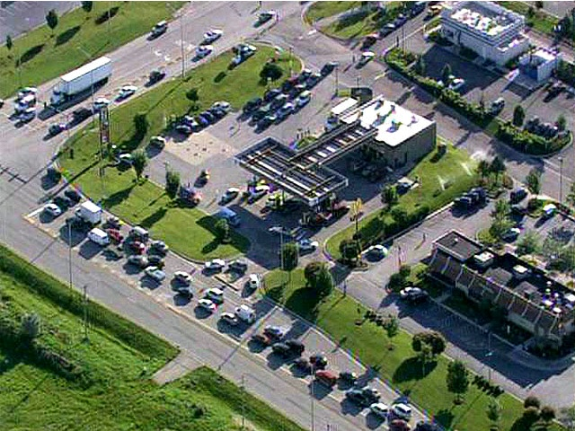

Carol Stops Traffic in Romeoville
Greetings Fans! If you were in the southern suburbs today, you may have encountered unusually heavy traffic around Weber Rd. and I-55. Carol was appearing at the 7-Eleven at Weber and Normantown Roads, and motorists lined-up for miles to see her. Well, they may have also been interested in the FREE GAS that Hershey was giving away from 7am - 9am-- but I am sure that was probably secondary. You can read about the Hershey promotion here.

The event was covered by the Daily Herald here, and on the WBBM Newsradio site here. (I especially like some of the comments at the bottom of the articles. I guess not everyone was excited about seeing Carol... or the free gas.) There were also brief mentions on NBC 5 (you can view a slide show here) and CBS 2 evening news in Chicago... although oddly enough, they seemed to focus on the free gas rather than on Carol's appearance.
Originally published on the Blogspot site